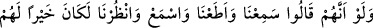

onlara yağcılık yaparak saptıran alimlerde bulunur. Öyleyse yağcılığın ortadan
kalkması, tamahı kesmeye bağlıdır.
Rivâyet edilir ki bir şeyhin bir kedisi vardı. Komşusu olan kasaptan her gün işkembe
vs. alırdı. Şeyh kasabın bir kötülük işlediğini görünce evine girip önce kediyi salıverdi.
Sonra kasabın yanına gidip yapmakta olduğu kötülüğü reddetti. Bunun üzerine kasap:
“Bundan sonra kedine bir şey vermem!” dedi. Şeyh de “Ben zâten kediyi salıverdim de
öyle geldim.” diye karşılık verdi.
Şeyhin bu sözü aynen şuna benzemektedir: İnsanların gönlünü hoş tutma arzusunda
olanlar onları kötülükten kolay kolay vazgeçiremezler. Şu halde akıllı olanlar,
nefislerini kötü huylardan tezkiye etmeli ve nâhoş hasletlerden temizlemelidir.
Temiz olmayan adama birdir Kâbe ile puthâne
Mânevî temizlik olmayan hânede hayır olmaz, gerisi bahâne.
46- Yahûdîlerden bir kısmı kelimeleri yerlerinden değiştirirler, dillerini eğerek,
bükerek ve dîne saldırarak (Peygambere karşı) “İşittik ve karşı geldik”, “dinle,
dinlemez olası”, “râinâ” derler. Eğer onlar “İşittik, itâat ettik, dinle ve bizi gözet”
deselerdi şüphesiz kendileri için daha hayırlı ve daha doğru olacaktı; fakat
küfürleri (gerçeği kabul etmemeleri) sebebiyle Allah onları lânetlemiştir. Artık pek
az inanırlar.
“Yahûdîlerden bir kısmı kelimeleri yerlerinden değiştirirler.” Yâni onları yok
ederler demektir. Çünkü onlar bu kelimeleri değiştirip yerlerine başkalarını koydukları
için Allah’ın koyduğu yerlerinden yok etmiş ve uzaklaştırmışlardır.
Tahrif iki çeşittir: 1. Günümüzdeki bid’atçıların kendi görüşlerine ters âyetleri te’vil
ettikleri gibi bir tür bâtıl te’ville kelâmı kastedilen mânânın dışında bir mânâya
çekmektir. 2. Bir kelimeyi başka bir kelime ile değiştirmektir ki bunu Yahûdîler
yapardı. Tevrât’taki Hz. Peygamber (s.a.v)’in vasfı ile ilgili “esmer reb’a”,
kelimelerini “âdem tuvâl” ve “recm” kelimesini de “had” kelimesiyle değiştirmeleri
gibi.
“Dillerini eğerek, bükerek” Yâni söylediklerini eğip bükerek ve sövmek için sözü
kendi kalıbından çıkararak söylüyorlar. Nitekim “Dinlemez olası” derlerken sanki bunu
“Sana karşı söz söylemek ve zorla dinletmek haddimiz değildir.” mânâsında söylemiş